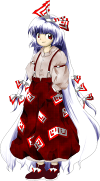

- Welcome to Touhou Wiki!
- Please register to edit. For assistance, check in with our Discord server or IRC channel.
Fujiwara no Mokou
Fujiwara no Mokou ɸɯd͡ʑiwaɽa no mokoː (♫) Huziwara no Mokou, Mokou Fuziwara | |
|---|---|
|
Fujiwara no Mokou in Antinomy of Common Flowers Figure of the Person of HouraiMore Character Titles | |
| Species | |
| Abilities |
Eternal youth and immortality, resistance to and manipulation of fire |
| Age |
Ageless; existed for over 1300 years |
| Occupation |
Rescues lost people, Bamboo Forest guide, claims to run a yakitori stand |
| Location |
Somewhere in the Bamboo Forest of the Lost |
Music Themes | |
| |
Appearances | |
| Official Games | |
| |
| Print Works | |
| |
Fujiwara no Mokou (藤原 妹紅) was formerly an ordinary human, but she became an immortal being after drinking the Hourai Elixir about 1300 years ago. Now she is never able to die, though she still feels the pain of injuries as normal. She's considered to be very powerful, given her long life, the power she earned through her life, and her immortal status since she can keep fighting until she can no longer stand the pain.
General Information[edit]
Mokou first appeared as the Extra stage boss of Imperishable Night and Shoot the Bullet. She also appeared as a background cameo in Hopeless Masquerade and as a day 3 boss in Impossible Spell Card, later she became a playable character in Urban Legend in Limbo.
Personality[edit]
Perhaps due to being ostracized for so long, Mokou is a loner by nature and chooses not to socialize with humans or youkai. She escorts lost humans she finds within the Bamboo Forest of the Lost, giving herself a job similar to that of a bamboo forest guide, and even then after escorting between Human Village and Eientei, she departs without saying a word. Nevertheless, to those whom she's acquainted with, she speaks bluntly and with lively personality. In Imperishable Night's extra stage, for example, she was easily roused and goes on a rant about how annoying Kaguya is. Not much else is known about her as she doesn't really talk much to anyone.
She's commonly thought of as having an androgynous style due to using phrases like "~na no kashira?" and "~na no yo?" which are considerably women's language, all the while using a belligerent tone and wearing pants, which is commonly thought of as unusual among Touhou characters. Within her in-game sprite, she also keeps her hands in her pockets.
She undertakes the duty of escorting people in the Bamboo Forest of the Lost. Although this may allow her a wider opportunity to socialize with other people, she still remains very reticent about herself. For example, when asked about her past, she doesn't answer with anything other than "I'm an ordinary health maniac who runs a yakitori stand" (it is unclear whether she truly does run a yakitori stand). However, she seems to happily listen to others' talking. Thus, even if someone doesn't lose one's way, it would be possible for her to be enlivened by a conversation.
She presently seems to be very content with her life contrary to being commonly thought of having a pessimistic lifestyle. With an unaging, undying body, she and Kaguya Houraisan kill each other every day, and the text of Imperishable Night even emphasizes this with the line "and she is alive to enjoy it, how magnificent!"
In Inaba of the Moon and Inaba of the Earth, she is shown to be really good at house chores like cooking, although she gets embarrassed when this is noticed.
Abilities[edit]
- Neither aging nor dying
Mokou's inability to die allows her body to receive an indefinite amount of punishment. No matter whether she's beheaded, incinerated or has taken any other form of strike, she'll always revive without exception. Mokou will recover within a few day's time if she takes a non-fatal blow. Due to the nature of the Hourai Elixir she drank over 1300 years ago, she's also incapable of contracting any form of disease or illness. This includes the natural process of aging.[1] It is said she can completely recover even if a single hair remained[2], although it seems redundant because those who taste the elixir will recover regardless.
Mokou's immortality, however, doesn't prevent her from being susceptible to fatigue. Even though she is incapable of dying, she still feels pain when injured just as a normal human does. It's said that since she doesn't die, feeling the sting of death when she reaches the brink of oblivion brings her a great deal of pain and fatigue when she immediately revives. For this reason, she can be defeated in spell card matches with danmaku even though she's invincible. It should be noted though, that this fatigue may be completely mental since she needs no sustenance such as food or sleep to stay alive.
- Manipulation of fire
Though never clearly described, Mokou appears to have some sort of control over fire. Many of her spell cards symbolize phoenix imagery, though this is most likely an aesthetic choice by Mokou (due to the phoenix being symbolic of immortality) rather than having any real meaning. The fact it took the combined efforts of her, Kaguya, and several rabbits to put out a forest fire in her Bohemian Archive in Japanese Red article implies that while she's capable of starting and increasing fire, she might not necessarily be able to extinguish it.
- All sorts of sorcery
According to Perfect Memento in Strict Sense, in her long life it seems she's mastered various kinds of sorcery to the point in which she can handle youkai lightly. She uses all kinds of spell cards in addition to her ability of manipulation of flames, which may also be a kind of sorcery she has mastered. However, it's never been stated exactly what kinds of sorcery she has mastered.
Occupation[edit]
Mokou frequently escorts anyone wanting to go to Eientei through the Bamboo Forest of the Lost. She also claims to run a yakitori stand. In addition, she regularly fights with Kaguya, and has for many years. As a powerful human (or a being who was once human), one of her main jobs is also youkai extermination.
Upon receiving escort from her, it is impossible to get lost in the bamboo forest. Also, there's no life-threatening danger in the forest since youkai would not attack. Because of that, it's a myth in the Human Village that if it's necessary to go to Eientei, that Mokou should immediately be contacted.
Backstory[edit]
Mokou was born as a daughter to the Fujiwara family during the Asuka and Nara periods. It's been estimated that it was around 700CE (i.e., currently about 1300 years old). It seems that she was an unwanted child because she wasn't allowed to go out in public.
Around 1300 years ago, Kaguya Houraisan embarrassed Mokou's father – and entire family – by presenting him with impossible requests when he asked for her hand in marriage (as had happened with many other young men). Mokou grew to resent the moon princess, and searched for a long time for a way to spite her, but Kaguya ran away by returning to the moon before Mokou could take revenge.
She finally found a way, by making an attempt to steal the Hourai Elixir for herself that Kaguya left for the Emperor of Japan of that time because it was something very important to Kaguya. She followed a group of soldiers led by a man named Iwakasa in secret, who were going up what is now Mount Fuji. However, it was difficult for the young girl to climb the mountain alone without proper equipment, so she quickly ran out of energy. This was then Iwakasa realized that she was present, so he helped her and they continued on, reaching the summit as one group. Once there, Mokou discovered that the group of soldiers planned to fling the jar into the fires of the volcano to destroy it, on orders from the current Emperor of Japan. As they were about to throw it in, the goddess Konohana-Sakuyahime, who calms the eruptions of Mount Fuji, appeared and forbid the group to throw the jar into the volcano because Mount Fuji's volcanic activities would restart should they do so. She explained to them that it was in fact the Hourai Elixir, the elixir of immortality. She gave the command to go to Yatsugatake where her older sister Iwanagahime handles immortality and unchangingness dwelt.
The soldiers tried to light the jar on fire, but Sakuyahime's powers prevented it. What happened after is unclear; Mokou believes that Iwakasa's men were killed by Konohana during their night watch because they tried to take the elixir for themselves as Iwakasa and Mokou slept. As the two got further down, Mokou was finally possessed by the desire for immortality, so she murdered Iwakasa and stole it from him, consuming it and thus became immortal.
After achieving immortality, she had an undying body, but humans who don't grow older aren't able to live as an ordinary humans, so until she drifted to Gensokyo, she moved from place to place, never stopping to dwell in one location. She spent three hundred years in isolation, away from the hateful eyes of people. For three hundred years after that, she would destroy anything that crossed her path, but after that, she spent three hundred years in boredom as the youkai couldn't hold her interest any longer. It's assumed that during these six hundred years she appeared in Gensokyo. It's unknown exactly when Mokou came to Gensokyo, but after nine hundred years total, she found out that Kaguya did not actually return to the moon but continued a life of escape, and that Kaguya also became one with an undying body.
Mokou was ecstatic in discovering someone who was in the same mess she was in. Since then Mokou and Kaguya have mutually killed each other day in, day out for about 300 years. After the incident of Imperishable Night, perhaps due to the influence of Eientei accepting patients who come for medical examinations, she also started creating her own connection with the humans of the Human Village by taking the position of an escort and guiding people through the bamboo forest who want to go to Eientei. She remains very reticent, however.
On Maribel Hearn's trip to the Bamboo Forest of the Lost of several hundred years ago she met a girl who seems to be Mokou.[3] She rescued her from a mouse or rabbit youkai, which then ran away and hid after "a girl entirely on fire" chased the youkai away without a word exchanged between the two. In Perfect Memento in Strict Sense, Hieda no Akyuu speculates that Mokou is a descendant of a hidden group of "youkai-killing ninja". People in general are doubtful of the clan's existence. Akyu claims that Mokou feigns ignorance when asked about it.
Background Infomation[edit]
Origin[edit]
Considering Mokou's surname and her back story as a daughter of an aristocrat charmed by the Kaguya-hime of legend, Mokou's father is strongly implied to be Kuramochi no Miko (車持皇子), who was given the quest for the Jeweled Branch of Hourai by Kaguya. However, many people also say that her father was Fujiwara no Fuhito (藤原不比等), the most plausible candidate based on his surname and the factual founder of the powerful Fujiwara clan that existed between the 9th century and 13th century, but this person is only a candidate for whom Kuramochi no Miko could have been modeled after, and it must be warned that it's not a clear matter of the original The Tale of the Bamboo Cutter. Incidentally, Fujiwara no Fuhito had nine children, four sons and five daughters, and among the five daughters, it is unclear who the mother of the fourth and fifth daughters are, and for the fifth daughter, her name is even unknown.
If Kuramochi no Miko were Mokou's father, "Miko" ("prince") would mean a blood relationship with the Emperor of Japan, but as this has been used to refer to the sons of the emperor, it has been said that she's an offspring of a direct descendant of the emperor of that time (As a certain historical fact, all of the Miko ("princes") other than Kuramochi no Miko were enthroned as emperors, and thus Mokou's family would have a collateral relation, but in the time of the marriage proposal to Kaguya, Mokou's grandfather would be the emperor, implying that she would have had a direct relation at that time).
Name[edit]
Her full name is Fujiwara no Mokou (藤原 妹紅). Her last name Fujiwara (藤原, lit. "Wisteria field") is an actual and a common surname used in Japan - it should be noted that while this is one of the evidence which proves the political influence of the Fujiwara Clan, there are some Fujiwaras that aren't related to the Fujiwara Clan.
The characters for Mokou (妹紅) literally mean "Scarlet (younger) Sister". According to ZUN, however, Mokou can also mean "Paint me red" and her name has no connection to Flandre Scarlet. In the right context, Kou can also be translated as "female phoenix bird", which is fitting, while Mo can be translated as "mourning". Her name would mean something similar to "Mourning female Phoenix bird", a name somewhat fitting for her exiled life and events of her past. One of the kanjis is also shared in the Japanese name for the great burnet (吾亦紅 Waremokou), a plant that's known to cool the blood, stop bleeding, clear heat, and heal wounds. Specifically, the root is used to stop bloody dysentery, nosebleeds, and is applied topically to treat burns and insect bites.
Another noteworthy fact is that Mokou's last name is not actually a "family name" (苗字 myouji), but a "clan's name" (氏/本姓 uji/honsei) given by the Emperor. In ancient Japan times, it was common for aristocrats with uji to have the hiragana character の (no) between their uji and first name. The no used here indicates the "belonging", thus the English equivalent of her name would be "Mokou of the Fujiwara (Clan)".
Title[edit]
Mokou's character title hourai no hito no katachi (蓬莱の人の形, "Figure of the Person of Hourai") is a Japanese style transcription of hourai ningyou (蓬莱人形, "Hourai Doll"), a name of a spell card she uses. The word "hourai" used here is probably a reference to Mount Penglai (Penglai is the Chinese reading of Hourai): A legendary land in the Chinese mythology where hermits said to have lived.
The name Hourai Doll is also used in the Japanese main title of ZUN's music CD Dolls in Pseudo Paradise and Alice's spell card "Curse 'Hourai Doll'" (咒詛「蓬莱人形」). Considering ZUN's comment in her card, the connection between these and the story of Dolls in Pseudo Paradise is likely to be intentional. But the connection between these and Alice's card is probably irrelevant (at least directly), because Alice's Hourai Doll is probably only to be connected with the Dolls in Pseudo Paradise itself.
Spell card #199 in Imperishable Night is "Forgiveness: Honest Man's Death", which could also be a reference to the story in Dolls in Pseudo Paradise (where several honest men die).
Design[edit]
Mokou has red eyes and ankle-length pale blue (almost white) hair. She wears a light brown shirt that appears as if it's been discolored from fire, and dark red sashinuki hakama that are randomly decorated with paper charms. Her hair's tied with these same red and white paper charms. The paper talismans on Mokou's hakama and hair ribbons might be wards to protect her from being burned by fire. Her shirt, which lacks such talismans, appears to have been burnt repeatedly, while the ribbons and hakama show no such wear.
As depicted in the fourth chapter of Cage in Lunatic Runagate, Mokou is shown as having had short, dark hair before she drank the Hourai Elixir, though whether her current hair color was somehow caused by the Elixir is unknown.
Mokou is one of the few people in all of Gensokyo to wear relatively masculine clothing. This, along with her somewhat forceful way of speaking, often leads to her being depicted as something of a tomboy (perhaps why her parents kept her out of public view). However, because conditions in Gensokyo still resemble those of feudal Japan, patterned hakama are hard to come by and must be made by a skilled tailor and presumably are much more expensive than skirts or plain hakama. This makes patterned hakama a status symbol, and given Mokou's status as a daughter of the old Japanese aristocracy, she may have also affixed the charms to her hakama to distinguish her heritage.
Mokou's Appearances[edit]
Games[edit]
- Imperishable Night
The heroines are all sent into the Bamboo Forest of the Lost for a "test of guts" by Kaguya Houraisan, but Mokou knows that she did it to get at her. Once she realizes this, her anger is bridled, and they engage in combat.
Spin-offs[edit]
- Shoot the Bullet
In Shoot the Bullet, Aya Shameimaru encountered Mokou on the Extra stage and took photos of her danmaku.
- Hopeless Masquerade
Mokou made a background cameo appearance in Hopeless Masquerade on the Human Village stage. She is seen sitting next to Keine Kamishirasawa with her legs crossed, yawning.
- Impossible Spell Card
- Main article: Impossible Spell Card: Story
Presumably from hearing or seeing a wanted sign about the mischief-making amanojaku Seija Kijin, Mokou appears to be one of the many humans and youkai that tries to capture her. She uses spell cards that are considered impossible to dodge.
- Urban Legend in Limbo
- Main article: Urban Legend in Limbo: Mokou's Scenario
Mokou is a playable character in Urban Legend in Limbo. After discovering that Reimu possesses the Occult Ball of Yomotsu Hirasaka, she sets out to collect them all.
Literature[edit]
- Bohemian Archive in Japanese Red
When Aya Shameimaru happened to notice a mysterious fire in the Bamboo Forest of the Lost near Eientei she decided to investigate. Two girls, Fujiwara no Mokou and Kaguya Houraisan, were already present fighting the fire to put it out. Shortly after Aya began asking what had started the fire, Mokou suggested it might have been a cigarette butt from kids while Kaguya suggested it was yakitori (that is made from chicken). In her interview, Mokou used Kaguya's yakitori rumor to frighten Aya to running with no further questions. Aya ended the article in wonderment over the true cause of the fire.
During her interview with Mokou, Aya comes to the conclusion that it must have been Mokou who did it. However, Mokou first repeats that a cigarette butt caused it and then later insists that there never was a fire and threatens that Aya may just end up as yakitori if she keeps saying there was.
- Cage in Lunatic Runagate, chapter 4
- Main article: CiLR Chapter 4
Mokou goes to Keine Kamishirasawa to ask her about the smoke rising from the Youkai Mountain. Keine gives her a lecture on the subject, which makes Mokou reminisce about her past and how she became immortal.
She also worries about the moon rocket that Remilia Scarlet was building - that Kaguya Houraisan could possibly be returning to the Moon, and the only other one like Mokou would be gone forever. After eavesdropping on a conversation between Kaguya and Eirin Yagokoro at Eientei, she discovers that they never planned on going back to the Moon in the first place, and is somewhat relieved.
Relationships[edit]
Kaguya Houraisan[edit]
Mokou has despised Kaguya Houraisan for reasons mentioned in her backstory. When she surprisingly found Kaguya in Gensokyo after so many years of exile, and so close to where she lived, she was ecstatic that Kaguya was in the same mess she was. The two spent about 300 years slaughtering each other on a daily basis; Mokou described those days as "the joys of killing each other over and over" in Cage in Lunatic Runagate Chapter 4. Mokou's official profile also describes those days as "wonderful days", but she's grown to rather be annoyed at Kaguya's persistent attempts of trying to kill her, assassins or otherwise.[4][5] When Mokou suspects Kaguya is returning to the moon in Cage in Lunatic Runagate, she is initially worried that the only other immortal person who was in the same situation she was would no longer be on Earth[6], although she does eventually come to terms with the possibility.
Inaba of the Moon and Inaba of the Earth shows it can take the form of other competitions, from food fights to drinking to fishing, though this may be due to the lighthearted nature of the author that the canonicity of the manga is debatable and cannot be taken straightforwardly.
Keine Kamishirasawa[edit]
Mokou seems to have befriended Keine Kamishirasawa, describing her as the one of the few people who can understand her in the fourth chapter of Cage in Lunatic Runagate. Keine's sense of duty to protect all humans is no exception to Mokou, as she proclaimed to Kaguya's assassins in Imperishable Night's extra stage that she won't allow them to lay a hand on Mokou. Keine also traveled together with Mokou to see a flower viewing at the Hakurei Shrine in the continuation of Chapter 0 of Eastern and Little Nature Deity at the end of chapter 3.
Sumireko Usami[edit]
Initially annoyed by the high schooler, Mokou wins the battle finding herself appreciating the girl's power, and feeling a mutual fondness for her. After Sumireko dropped some of her Zener cards, Mokou decided to give them back to her as a pretense to meet again. Sumireko feels at ease around her.
Minor Relationships[edit]
- Reimu Hakurei, Marisa Kirisame, Sakuya Izayoi, Yukari Yakumo, Remilia Scarlet, Alice Margatroid, Yuyuko Saigyouji, and Youmu Konpaku
Some humans and youkai that were tricked by Kaguya into fighting Mokou during the extra stage of Imperishable Night. Mokou doesn't have any particularly notable feelings towards most of them (besides being impressed with Alice's knowledge of the Hourai Elixir), but she was flabbergasted with the humans crazy enough to go to the bamboo forest the night of a full moon. Cage in Lunatic Runagate shows that Mokou thinks Sakuya, Reimu, and Marisa are airheads. Mokou was one of the (many) attendants at Remilia's rocket party in Silent Sinner in Blue. When Alice fell into the three fairies' trap in the continuation of Chapter 0 of Eastern and Little Nature Deity at the end of chapter 3, Mokou and Keine both walked by without freeing her.
Mokou takes an interest in Futo after learning she also had "experienced death once before." Mokou is thrilled by the idea of meeting other immortals, and gives the Hall of Dreams' Great Mausoleum a visit.
- Other Residents of Eientei
She has a good relationship with Eientei despite her feud with Kaguya, working with the rabbits to stop that forest fire, and is known to lead people to and from Eientei. In Inaba of the Moon and Inaba of the Earth, she brings lost rabbits back to Eientei.
- Iwakasa
Iwakasa was murdered by Mokou in order for her to steal the Hourai Elixir and become immortal. She notes that one day, she wants to travel to the top of the Youkai Mountain, presumably to see Iwanagahime, the goddess of immortality, and to apologize to her for what she did to Iwakasa. (NB: The Youkai Mountain was once the mountain Yatsugatake, which is the mountain Konohana-Sakuyahime suggested to Mokou and Iwakasa to bring the elixir to instead.) Spell card #199 is likely to be referring to Iwakasa, as she implied she felt regret over causing his death. In the fourth chapter of Cage in Lunatic Runagate, it's shown that her immortality was derived indirectly from Iwakasa as well, as he saved her life prior to her immortality.
Gallery[edit]
Mokou surrounded by a phoenix symbol, as seen in Imperishable Night
Mokou's sigil in Grimoire of Marisa

Mokou can be seen in the small moon in the bottom left of Imperishable Night's CD cover
Mokou artwork from Imperishable Night
Mokou artwork from Urban Legend in Limbo
Mokou in Cage in Lunatic Runagate
Mokou in Cage in Lunatic Runagate
Skills[edit]
| Name | Translated | Comments | Games | Usage | ||
|---|---|---|---|---|---|---|
| Total: 7 | ||||||
| リザレクション | Resurrection | ULiL AoCF |
5C 5C | |||
| 自傷の火爪 | Self-Harming Fire Talons | ULiL AoCF |
6C 6C | |||
| 火焔竹筒 | Blazing Bamboo Tubes | ULiL AoCF |
4C 4C | |||
| 火焔鳥 | Blazing Bird | ULiL AoCF |
8C 8C | |||
| 自傷の火脚 | Self-Harming Fire Kick | ULiL AoCF |
2C 2C | |||
| 人体自然発火 | Spontaneous Human Combustion | Aided by Occult Ball | ULiL AoCF |
A+B with Occult Ball A+B with Occult gauge | ||
| 火焔脚 | Blazing Kick | AoCF | 8C again during 8C | |||
Spell Cards[edit]
| Name | Translated | Comments | Games | Stage | ||
|---|---|---|---|---|---|---|
| Total: 31 | ||||||
| 時効「月のいはかさの呪い」 | Limiting Edict "Curse of Tsuki-no-Iwakasa" | IN | St. Ex | |||
| 不死「火の鳥 -鳳翼天翔-」 | Undying "Fire Bird -Feng Wing Ascension-" | IN GoM |
St. Ex — | |||
| 藤原「滅罪寺院傷」 | Fujiwara "Wounds of Metsuzai Temple" | IN | St. Ex | |||
| 不死「徐福時空」 | Undying "Xu Fu's Dimension" | IN | St. Ex | |||
| 滅罪「正直者の死」 | Expiation "Honest Man's Death" | IN | St. Ex | |||
| 虚人「ウー」 | Hollow Being "Wu" | IN GoM |
St. Ex — | |||
| 不滅「フェニックスの尾」 | Inextinguishable "Phoenix's Tail" | IN GoM |
St. Ex — | |||
| 蓬莱「凱風快晴 -フジヤマヴォルケイノ-」 | Hourai "South Wind, Clear Sky -Fujiyama Volcano-" | IN GoM |
St. Ex — | |||
| 「パゼストバイフェニックス」 | "Possessed by Phoenix" | IN GoM |
St. Ex — | |||
| 「蓬莱人形」 | "Hourai Doll" | IN | St. Ex | |||
| 「インペリシャブルシューティング」 | "Imperishable Shooting" | IN GoM |
St. Ex — | |||
| 「フェニックス再誕」 | "Phoenix Rebirth" | IN | LW | |||
| 貴人「サンジェルマンの忠告」 | Exalted Personage "Forewarning of St. Germain" | StB | St. Ex | |||
| 蓬莱「瑞江浦嶋子と五色の瑞亀」 | Hourai "Mizunoe no Uranoshimako and the Five-Colored Turtle" | StB | St. Ex | |||
| 惜命「不死身の捨て身」 | Regretful Life "Immortality's Reckless Sacrifice" | ISC ULiL |
St. 3 Story (Extra) | |||
| 「火の鳥 ‐不死伝説‐」 | "Fire Bird -Legend of Immortality-" | ISC | St. 3 | |||
| 焔符「自滅火焔大旋風」 | Blaze Sign "Self-Destruction Giant Flame Whirlwind" | ULiL AoCF |
Use Use | |||
| 不死「凱風快晴飛翔蹴」 | Undying "'South Wind, Clear Sky' Soaring Kick" | ULiL AoCF |
Use Use | |||
| 呪札「無差別発火の符」 | Cursed Talisman "Indiscriminate Ignition Cards" | ULiL AoCF |
Use Use | |||
| ＊こんな世は燃え尽きてしまえ！＊ | *Let This Whole World Burn Away to Nothing!* | ULiL AoCF |
Use-LW Use-LW | |||
| 炎符「フェニックスの超高温な羽」 | Flame Sign "Phoenix's Super-High-Temperature Feathers" | ULiL | Story | |||
| ＊凱風晴天快晴脚＊ | *'South Wind, Fine Weather, Clear Sky' Kick* | ULiL | Story | |||
| 炎符「フェニックスの羽」 | Flame Sign "Phoenix's Feathers" | ULiL | Story (Extra) | |||
| 爪符「デスパレートクロー」 | Claw Sign "Desperate Claw" | ULiL | Story (Extra) | |||
| 「この何度目かの命、燃え尽きるまで」 | "Until This Life, Repeated Countless Times, Burns Away" | ULiL | Story (Extra) | |||
| 化火符「妖怪弾幕変化 葉っぱ発破」 | Transform Fire Sign "Youkai Danmaku Transformation: Dry Leaf Detonation" | Co-owner with Mamizou | AoCF | Story | ||
| 火狂符「人体発火秘匿弾幕（バーニングヒドゥンバレット）」 | Fire Madness Sign " |
Co-owner with Reisen | AoCF | Story | ||
| 「この何度目かの命、燃え尽きるまで」 | "Until This Life, Repeated Countless Times, Gets Fantasy-Sealed Away" | Co-owner with Reimu | AoCF | Story | ||
| 萃夜符「身命霧散」 | Gathering Night Sign "Precious Life Scatters like Mist" | Co-owner with Suika | VD | Nightmare Friday - 1 | ||
| 永珠符「捨て身のリフレクション」 | Eternal Orb Sign "Reckless Sacrifice's Reflection" | Co-owner with Hecatia | VD | Nightmare Friday - 4 | ||
| 永珠符「穢れ無き珠と穢れ多き霊」 | Eternal Orb Sign "An Unsullied Orb and a Much-Sullied Spirit" | Co-owner with Junko | VD | Nightmare Friday - 6 | ||
Additional Information[edit]
- Mokou appears on the cover of Imperishable Night, silhouetted against the moon beneath the silhouette of Kaguya.
- Mokou can actually be observed dying and resurrecting after each spell card in Imperishable Night.
- Mokou would be 1340 years old, give or take 10, to be more precise. The roughly 15 year span that Fujiwara no Fuhito had children in would be accurate enough to call Mokou to have been born in this timeframe.
- Mokou was planned to debut as a playable character in Touhou Hisoutensoku, but the plot involving her and Kaguya was eventually scrapped.[7]
- Coincidentally, Soga no Tojiko is based on the rival Soga clan that the Fujiwara clan took down, known as the Isshi Incident. This is further implied by Tojiko's lightning powers, which is a joke on how Fujiwara was "cursed" by the Soga clan after Nakatomi no Kamatari, the founder of the Fujiwara clan, was mysteriously struck by lightning after the incident. Whether or not this rivalry is important remains to be seen.
Fandom[edit]
Official Profiles[edit]
|  | ○エキストラボス 蓬莱の人の形 藤原 妹紅（ふじわらのもこう） 種族：人間 蓬莱の薬を服用し、ずっと生き続けている人間。 大昔、まだ不老不死ではなかった頃、彼女は貴族の父を持つ娘だった。 それ以来、幼い彼女はずっと輝夜を敵対視してきた。輝夜が月に帰る しかし壷を手に入れた人間は何故か、その壺を山に捨てようとしてい 成長しない人間は同じ場所では暮らせない。転々と住む場所を変えな それから長い年月が過ぎた。 今では、輝夜と殺しあうのが日常である。最初この山奥で輝夜の姿を 今でも輝夜は憎い。それに輝夜は私を消そうとしてくる。でも、死ぬ 生きているってなんて素晴らしいんだろう。 |
Extra Boss, Figure of the Person of Hourai
Huziwara no Mokou Species: Human A human who has lived forever since consuming the Hourai Elixir. Long ago, before she became immortal, she was the daughter of an aristocrat. She wasn't allowed to go out in public, so it seems that she wasn't a wanted child. One day, her father proposed to a commoner girl, but was humiliated because she responded by making an impossible request. That girl was Kaguya. Mokou has hated Kaguya since then, and wanted to take her revenge before Kaguya returned to the moon. She couldn't make it in time, however... She reconciled herself by attempting to steal the pot of medicine that Kaguya left for the emperor of that time. Oddly, by the time Mokou found the medicine, people were about to throw it into a volcano. She managed to steal it before it was thrown in and consumed it - the Hourai Elixir... That was the last time she was ever seen. Humans who never age cannot live in the same place for long, so Mokou was forced to live as a wanderer... Humans usually can't survive alone, but she can't die. However, she still suffers from hunger if she doesn't eat and pain if she becomes injured. Eventually, she chose to live like a forgotten youkai in a desolate place... Many long years came to pass. Now, Mokou and Kaguya kill each other on a daily basis. She was extremely surprised to discover Kaguya in Gensokyo and so close to where she lived. It's no wonder, though; Kaguya left the Hourai Elixir, one of the moon's most classified secrets, on Earth. She could never expect to return to the moon in peace. Kaguya also had to run. Mokou felt relief beyond what she had ever experienced - Kaguya was in the same mess she was! Mokou still detests Kaguya, and Kaguya still tries to kill her, but neither of them can die forever. What a meaningful days and nights. This secluded place in a deep mountain is truly the land of Hourai! How magnificent it is to be alive! |
Official Sources[edit]
- 2004/08/11 Imperishable Night - Extra Stage dialogue; キャラ設定.txt (official profile)
- 2005/08/11 Bohemian Archive in Japanese Red - Article and Interview: Mokou
- 2005/12/30 Shoot the Bullet - EX Stage Spell Card comments
- 2006/12/27 Perfect Memento in Strict Sense - The Crimson Watchguard: Fujiwara no Mokou
- 2008/03/25 Cage in Lunatic Runagate - Chapter 4
- 2008/04/22 Inaba of the Moon and Inaba of the Earth - Chapter 11
- 2008/05/22 Inaba of the Moon and Inaba of the Earth - Chapter 12
- 2008/10/22 Inaba of the Moon and Inaba of the Earth - Chapter 17
- 2008/11/22 Inaba of the Moon and Inaba of the Earth - Chapter 18
- 2008/12/09 Silent Sinner in Blue - Chapter 9 (cameo)
- 2009/04/22 Inaba of the Moon and Inaba of the Earth - Chapter 23
- 2009/07/28 The Grimoire of Marisa - The Grimoire of Marisa
References[edit]
| This page is part of Project Characters, a Touhou Wiki project that aims to write proper descriptions for all official characters of Touhou Project. Please keep the character page guidelines in mind when contributing. |